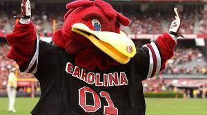
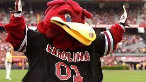

Greetings from the Land of the Gamecocks!
 

Greetings from the Land of the Gamecocks: Columbia, South Carolina (or,as some may call, it, the City of Dreams). Four score and seven years (or, 3 months) ago, I packed my bags and left the north for this wonderful paradise. I immediately set out to explore all that the city has to offer--from the wonderful institution of Shiv's, across from the Honors Dorm, to the iconic Williams-Brice Stadium, located a convinient 45 minute walk away from campus across train tracks and highways. I quickly realized some very important things: one, Columbia drivers operate their vehicles like they are blindfolded, two, southern hospitality is in fact a real thing, and three, you cannot walk while talking on the phone, because you will trip on the bricks on the horseshoe and embarass yourself.
Columbia definitely has its ups and downs. One of my favorite things about it has got to be the Soda City Market, which has food, clothes, art, and, most importantly, DOGS. Other areas of the city to check out include Five Points (if you like people chasing you at night) and the Thomas Cooper Library, of which I am too frequent of a visitor. If you're ever near the Honors Dorm, I recommend getting coffee or boba at The Corner Blend. Don't worry about trying to fit in dinner at Honeycomb Cafe, though--I'd go to Fresh Greene's or Community Table (affectionately nicknamed ComTab) instead. Oh, and of course, don't forget to visit the Cocky statue for good luck.